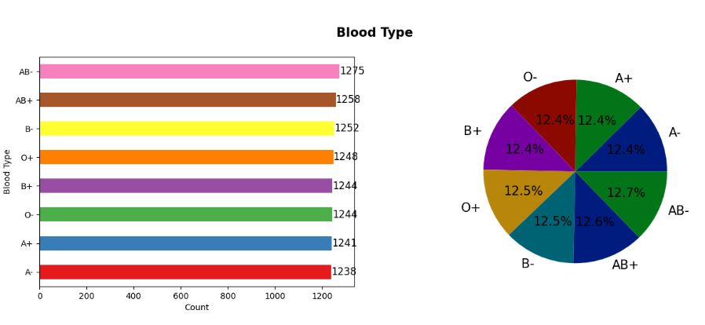
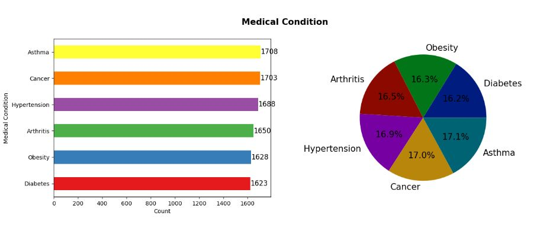
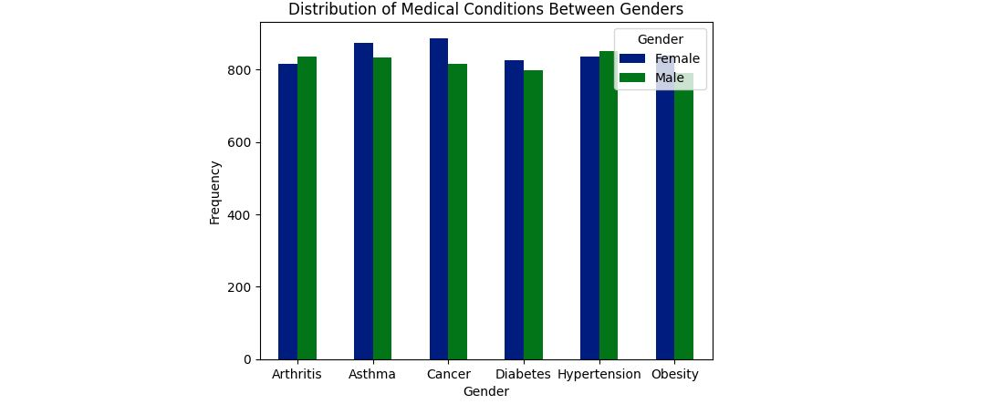
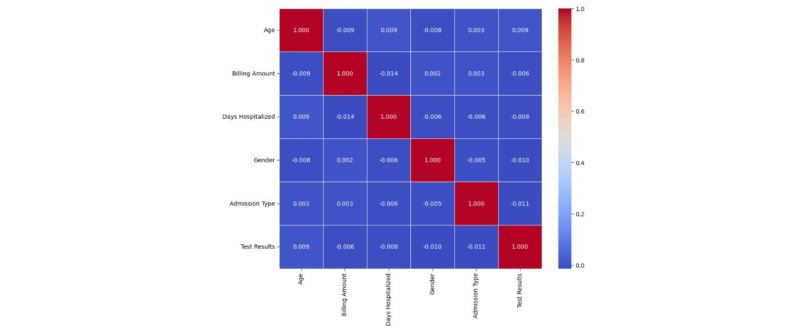

Healthcare Data Analysis
Pay close attention to the relationships between demographic factors and medical conditions. Identifying these correlations can reveal critical insights that may not be immediately obvious but are essential for targeted healthcare interventions and resource optimization.
About the Dataset
The dataset utilized in this project is a synthetic healthcare dataset, which consists of 10,000 records, and which has been meticulously crafted to mimic real-world patient data. It encompasses a wide range of variables, including patient demographics, admission details, medical conditions, treatment outcomes, and healthcare service utilization.
- Patient Demographics: Information such as age, gender, and ethnicity.
- Medical Conditions:: Data on various diagnosed medical conditions, including chronic diseases, acute conditions, and other health issues.
- Admission Details:: Records of hospital admissions, including admission dates, discharge dates, and the type of care received.
- Treatment Information:: Details on the treatments provided, including medications prescribed, procedures performed, and the length of stay.
- Healthcare Services:: Information on the utilization of healthcare services, such as the frequency of visits to healthcare providers, types of services accessed, and patient outcomes.
Exploratory Data Analysis (EDA)
This project involved performing an Exploratory Data Analysis (EDA) on a synthetic healthcare dataset sourced from Kaggle. The goal was to uncover meaningful insights from the data, including trends in patient demographics, distributions of medical conditions, and the effectiveness of healthcare services. Here are couple of sample images.
 Distribution of Medical Conditions Between Genders:
Interpretation Female have higher share in majority of the medical conditions. Cancer is leading medical condition among female whereas Hypertension is leading cause among male.
Correlation matrix using heatmap:
- There is a slight correlation between age and test results. Even there is a positive correlation between age and days hospitalized. There is a negative correlation between age and billing amount.
- Biling amount has negative correlation with test results and days hospitalized. Billing amount has a positive correlation with admission type and gender.
- Days hospitalized has negative correlation with every attribute except age.
- Except for billing amount attribute, gender has a negative correlation with all other attributes.
- Admission type and test results have a negative correlation.
Key Contributions:
- Conducted a thorough data cleaning process to ensure accuracy in subsequent analysis.
- Performed a detailed exploration of the dataset, uncovering trends in patient demographics and healthcare services.
- Visualized key findings using a combination of static and interactive plots to enhance the interpretability of the results.
- Identified correlations between different variables, offering insights into the relationships within the dataset.
Tools & Technologies:
- Pandas and NumPy for data manipulation and numerical operations.
- Matplotlib, Seaborn, and Plotly for creating informative and interactive visualizations.
- Jupyter Notebook as the primary environment for conducting the analysis.
Conclusion:
- Compared to males, there are more female patients.
- Most patients have the blood type of AB-.
- Asthma is the major medical condition among patients.
- Cigna is the leading insurance provider.
- Penicillin is the most prescribed medication.